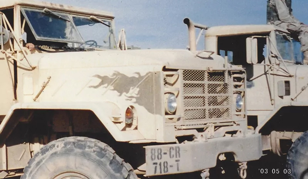

Who am I
Design Strategist, User Experience Designer, Graphic Designer, and Person (the fun type)Hi there,
As a Design Leader with expertise in human-centered service design, advanced design thinking, and user experience strategy, I have successfully led teams in creating digital experiences across finance, insurance, medical devices, fitness equipment, marketing, and advertising industries. My approach ensures that solutions are not only user-centric, but also strategically aligned with business objectives and development feasibility.
My Core Strengths:
- Leadership & Team Development – Coaching teams in design-thinking methodologies, fosteringinnovation, and aligning efforts toward strategic business goals.
- User Experience & Product Design – Applying insights from Human-Centered Service Design (HCD)and Advanced Design Thinking to craft seamless, research-driven user experiences.
- Systems-Thinking & Strategy – Driving operational improvements and advocating for scalable,user-first solutions across complex organizations.
- Presentation & Workshop Facilitation – Leading design sprints, workshops, and executivepresentations to communicate the value of design.
- Visual & Motion Design – Leveraging graphic design, motion/video editing, and front-end experiences to create engaging, high-impact experiences.
With my User Experience Certification (UXC), I deliver validated user experiences with user research, design strategy, and systems-thinking methodologies. Beyond delivering digital product solutions, I am a curious intrapreneur who thrives on solving problems through creative solutions. My ability to bridge design, business strategy, and development has allowed me to drive meaningful impact within organizations.
Additionally, my military experience has sharpened my leadership skills, resilience, and ability to focus on what truly matters—fostering collaboration, empowering others, and driving results in fast-paced environments.
Let’s set up a time to discuss how I can contribute to your team. When would be a good time for us to connect?
I love the fact that I get to lead teams of people through the philosophy of human-centered design, design thinking, and product development. I also deliver experience design and strategy that meet the desires of our customers, the feasibility of our development teams, and the viability of the business. I currently work and play from Madison (Wisconsin), though I am used to working onsite or virtually with a wide variety of teams across diverse geographies.

I'm an avid reader. I love to learn more about my profession, design, human behavior, self-improving myself, and helping others. One of my favorite books is Orbiting the Gaint Hairball by Gordon MacKenzie.

Apart from work, I love the outdoors. Just this year alone, I will have:
- Snowboarded in Vail, local parks, and the many “hills” of WI and the UP
- Kayaked the Wisconsin River on a 3-night trip (love the sandbars)
- Car-camped across the great state of Wisconsin too many times to count
- Thru-hiked 125 miles of the upper Ice Age Trail
- Trained for my second Ironman distance race in September ‘22
I enjoy sharing my outdoor experiences with my family and friends. We’ve had many adventures over the years that have helped me be a better person. Here is a glimpse into some of my outdoor adventures.
Another fun fact about me; I enlisted at the age of 17 into the United States Army and served one tour of duty (OIF) in 2003. While in a war zone, my contributions and performance earned me a retroactive promotion (battlefield promotions weren’t reinstated until 2009) to a non-commissioned officer. And yes, I used camo paint to draw flames on my truck in the middle of Iraq.
